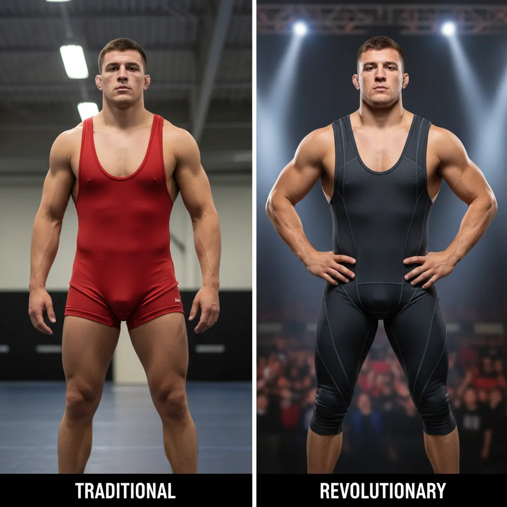
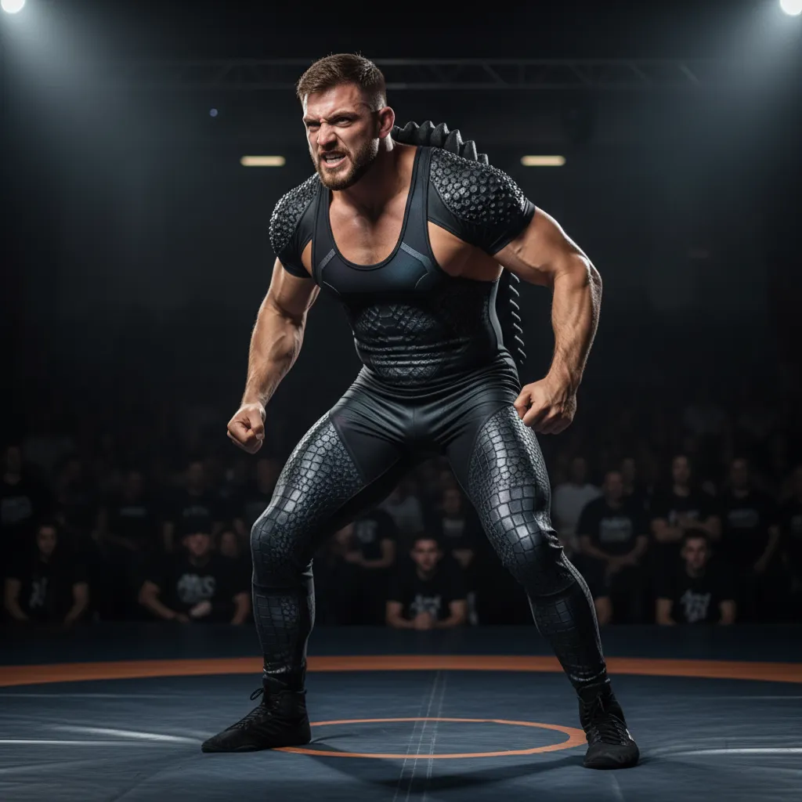
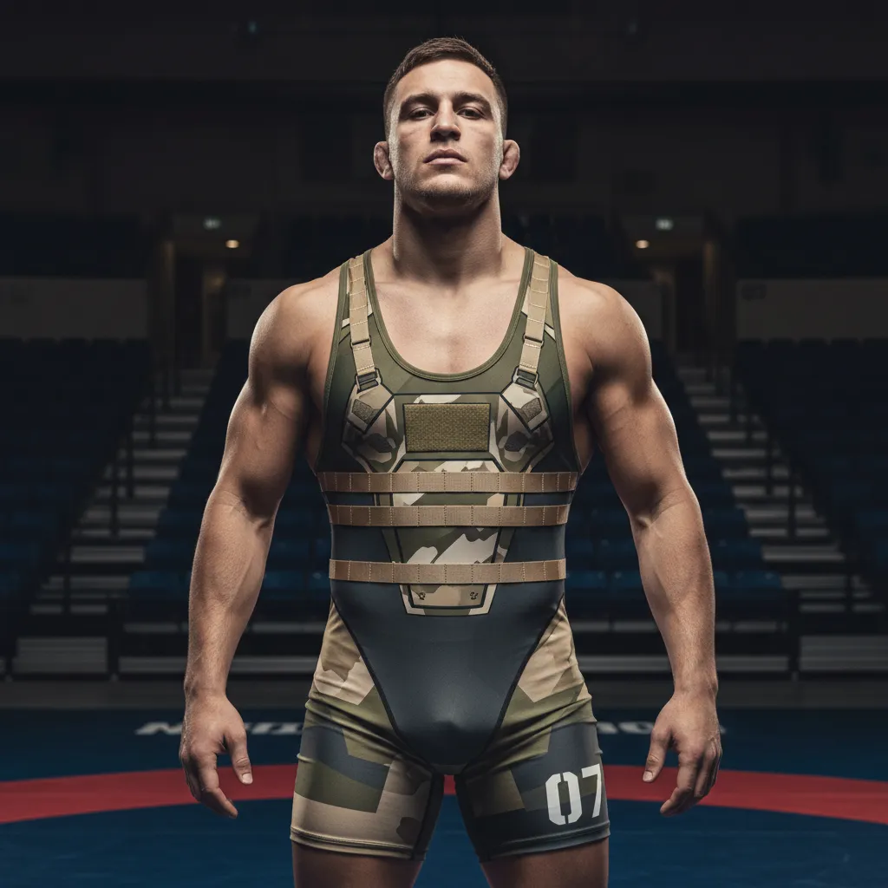
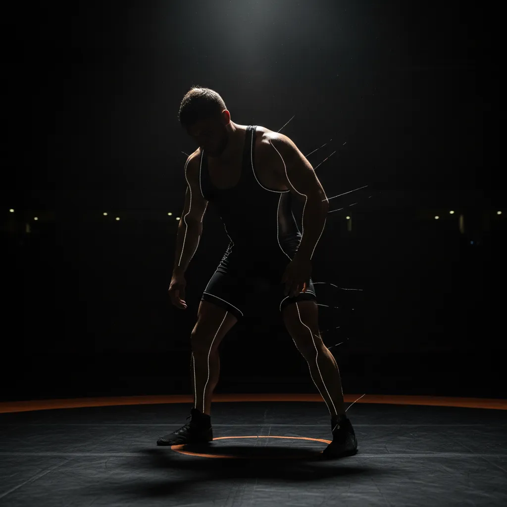
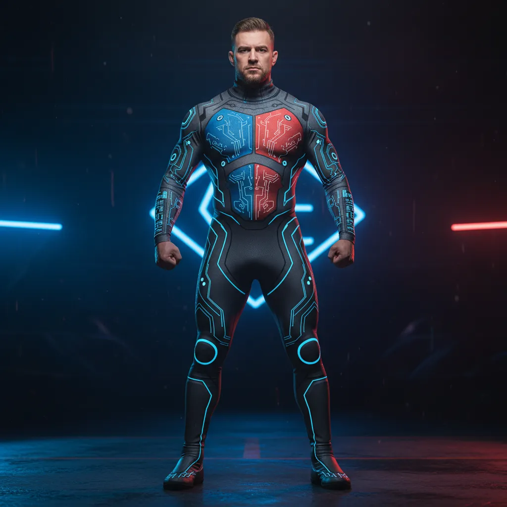
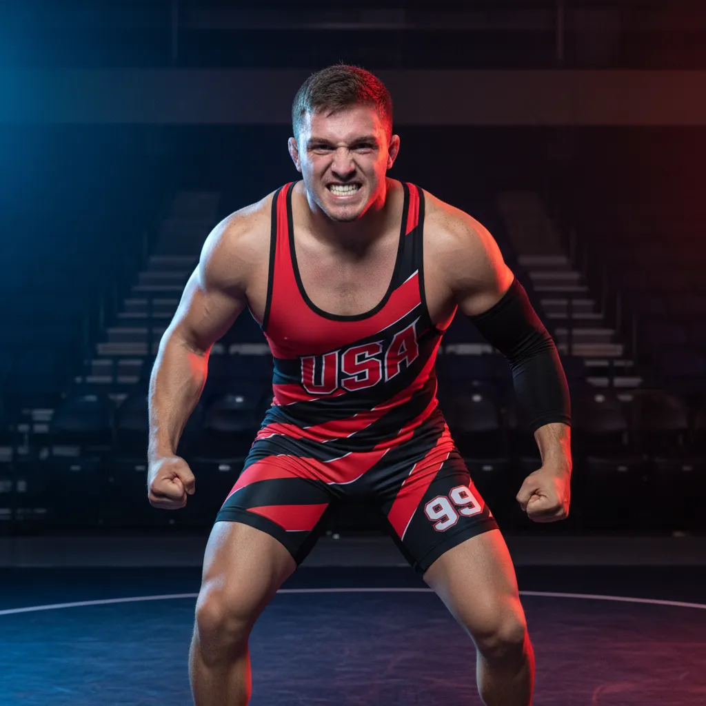
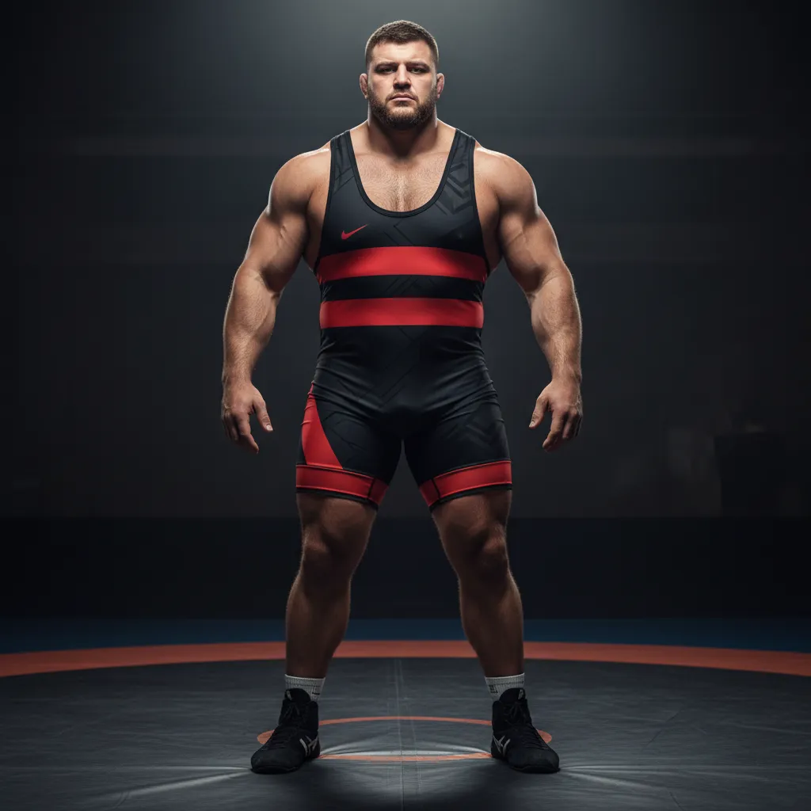

Борец вольного стиля весом 74 килограмма способен поднять и бросить через себя человека собственного веса за доли секунды. Его тело — это машина из стальных связок, взрывной мускулатуры и десятилетий тренировок. Чемпион мира по борьбе — один из самых функционально сильных людей на планете. Он проводит на ковре шесть минут, которые по интенсивности сопоставимы с десятикилометровым забегом с рюкзаком. Его пульс в схватке достигает 190 ударов в минуту.
А теперь посмотрите, как он выглядит.
Тонкий обтягивающий комбинезон — singlet — превращает элитного атлета в фигуру, вызывающую скорее неловкость, чем трепет. Трико обнажает всё, что зритель не просил видеть, и при этом не подчёркивает ничего из того, что делает борца устрашающим. Ни ширину спины, ни рельеф плеч, ни мощь ног.
Это не статья-жалоба. Это проект. Мы разберём, почему форма борцов стала такой, какие ограничения нельзя нарушить, и предложим шесть революционных концептов новой экипировки — от биомиметики хищников до киберпанк-скафандра. Не эволюция трико, а полная перезагрузка — форма, которая делает с борцом то, что военная форма делает с солдатом.
Проблема: борьба проигрывает борьбу за зрителя
Парадокс восприятия
Боксёр выходит на ринг в атласных шортах до колена с широким поясом, часто — в именном халате. Силуэт чёткий, узнаваемый, театральный. Шорты скрывают бёдра и подчёркивают торс. Каждый выход — шоу.
Боец UFC носит шорты свободного кроя с агрессивным дизайном. Верхняя часть тела открыта — зритель видит мышцы, татуировки, шрамы. Всё создаёт нарратив бойца.
А борец? Борец выходит в том, что визуально неотличимо от купальника.


Одноцветное трико, которое в лучшем случае имеет пару полосок. Даже олимпийский чемпион в этом наряде выглядит как участник школьных соревнований. Два человека в обтягивающих комбинезонах сливаются друг с другом на ковре. Зритель не может мгновенно считать, кто есть кто.
Между 2011 и 2016 годами количество борцов в старших школах США упало на 7,9%. Одна из причин — молодые атлеты стесняются надевать singlet. Тренер Дэнни Стак: «Мы вербуем 118-килограммовых футболистов для борьбы, и они надевают трико в первый раз... и не хотят продолжать.»
Международная федерация борьбы (UWW) это понимает. Поэтому уже вводились изменения: обязательные разные цвета для соперников, эксперименты с дизайном. Но всё оставалось косметическим — меняли узор на трико, не меняя сам подход.
Как мы дошли до лосин с флагами
Обнажённые греки и идеал калокагатии
В 708 году до н.э. борьба стала первым негоночным видом спорта в программе Олимпийских игр. Борцы выступали полностью обнажёнными. Само слово «гимнасий» происходит от греческого gymnos — «обнажённый».
Перед схваткой атлеты натирали тела оливковым маслом, затем посыпали тонким порошком. Обнажённость подчёркивала равенство, а идеально вылепленное тело было воплощением калокагатии — идеала, связывающего физическую красоту с моральным совершенством.
Для греков борец должен был выглядеть величественно. Его тело было его презентацией. Куда делась эта философия?
От трусов до трико: хронология

1912, Стокгольм — singlet впервые появляется на Олимпиаде. До этого борцы выступали в обтягивающих футболках и шортах.
1960-е — NCAA обязала носить трёхкомпонентную форму: безрукавка с длинными полами, полноразмерное трико и облегающие шорты поверх. Три слоя ткани на одном борце.
Конец 1960-х — цельный singlet получает одобрение и становится стандартом на следующие пятьдесят лет.
1980-е — минимализм достигает предела. Трико напоминает «короткие шорты с подтяжками».
2017 — поворотный момент. NFHS одобряет двухкомпонентную альтернативу: компрессионные шорты + рубашка. Причина прямая: молодёжь отказывается надевать singlet.
Форма, которую стесняются надевать, — это форма, которая проиграла. Не функционально, а идеологически.
Правила игры: что нельзя нарушить
Прежде чем проектировать, зафиксируем нерушимые ограничения. Любой концепт, нарушающий хотя бы одно — фантазия, а не проект.
1. Невозможность захвата за ткань
Главный закон. В вольной и греко-римской борьбе запрещено хватать за одежду. Значит: никакой свободной ткани, никаких элементов, за которые можно зацепиться.
Решение: допустимы накладные панели, если они термически приварены к основе и не образуют зазора. Толщина — не более 3 мм. Край — оплавлен.
2. Полная свобода движений
Борец выполняет движения, недоступные большинству людей: глубокий присед с разведёнными коленями, борцовский мост, подъём соперника с полной амплитудой, скручивания на 180°.
Решение: растяжение ткани не менее 40% в четырёх направлениях. Все швы — плоские или бесшовные. Декоративные элементы — только в зонах минимальной деформации.
3. Материал не скользкий
UWW запрещает всё, что делает захват скользким.
Решение: текстурированный полиэстер с микрорельефом. Никаких глянцевых поверхностей. Сублимационная печать вместо шелкографии.
4. Минимальный вес
Борцы сгоняют вес до последнего грамма. Разница между категориями может составлять 50–100 граммов. Текущий singlet весит 150–250 г.
Решение: целевой вес — не более 350 г. Каждый элемент обоснован.
5. Безопасность
Никаких жёстких элементов, острых краёв, металла. Ничего, что может травмировать при силовом контакте.
Мы не предлагаем нарушить правила. Мы предлагаем максимально использовать пространство внутри них.
Эффект формы: почему одежда меняет человека
Прежде чем показать концепты, разберёмся с психологией. Потому что дело не в ткани и не в цвете — дело в том, что форма делает с восприятием.
Полицейский в форме и тот же человек в футболке — два разных существа в глазах окружающих. Пожарный в полной экипировке вызывает инстинктивное уважение. Спецназовец в тактическом снаряжении — инстинктивный страх. Это не случайность. Это инженерия восприятия, отточенная столетиями.
Пять механизмов «эффекта формы»
1. Деперсонализация. Военная форма стирает индивидуальность и показывает функцию. Ты видишь не Ивана — ты видишь солдата. Не Джона — а оперативника. Форма говорит: перед тобой не человек, а боевая единица. Борцовское трико делает ровно наоборот — оно обнажает слишком много личного и слишком мало функционального.
2. Амплификация силуэта. Шлем, бронежилет, наплечники, подсумки — всё это увеличивает контур тела. Человек кажется на 20–30% больше, чем он есть. Это работает на глубинном уровне: больший силуэт = большая угроза. Борцовский singlet не просто не увеличивает — он сжимает, делая атлета визуально меньше.
3. Цветовая авторитарность. Тёмные, приглушённые тона — чёрный, графитовый, оливковый — ассоциируются с властью и контролем. Яркие школьные цвета — красный и синий трико UWW — ассоциируются с игрой. Не с боем.
4. Символическая нагрузка. Нашивки, номера, знаки различия, ранги — каждый элемент военной формы несёт нарратив. Он говорит: этот человек прошёл через что-то, он заслужил каждую деталь. На борцовском трико — логотип Asics и флаг. Всё.
5. Контролируемая агрессия. Каждый элемент тактического снаряжения говорит одно: «я готов к бою». Форма — это коммуникация. Singlet коммуницирует одно: «я на уроке физкультуры».
Военная форма превращает человека в машину. Борцовское трико превращает машину в человека в нижнем белье. Шесть концептов ниже — попытка развернуть этот эффект на 180 градусов.
Исследования «enclothed cognition» (Адам и Галинский, 2012) показали, что одежда влияет не только на восприятие окружающих, но и на поведение самого носителя. Участники эксперимента, надевавшие белый халат, который им описывали как «докторский», показывали значительно более высокую концентрацию внимания, чем те, кому тот же халат описывали как «малярный». Форма программирует мозг.
Что, если борцовская форма могла бы программировать борца на агрессию, а соперника — на страх?
Концепт I: «Хищник»
Биомиметика хищников. Борец — не человек в трико, а существо. Инстинктивная реакция — угроза.

Вся поверхность формы покрыта текстурными зонами, имитирующими кожу хищников. Плечи и дельтоиды — акульи дентикулы: микрорельеф из V-образных чешуек, которые на настоящей акуле снижают сопротивление воды, а здесь создают визуальный эффект «живой брони». Торс — змеиная чешуя: гексагональный паттерн, подчёркивающий рёбра и пресс. Бёдра — крокодилья кожа: крупный рельеф, добавляющий визуальный объём.
Вдоль позвоночника — рельефный «хребет» из EVA-пены толщиной 2 мм. Не декорация — функциональная деталь: на телекартинке борец читается как животное, а не человек. Спинной хребет ломает привычный контур тела.
Цвета — антрацитовый чёрный с матовыми переливами. При движении текстурные зоны по-разному ловят свет, создавая эффект «дышащей кожи».
Основа: полиамид-эластан 80/20, 200 г/м². Текстуры: силиконовый 3D-принт (0,3–0,8 мм), зональная сублимация. Хребет: EVA-пена 2 мм, термосварка. Соединение: бесшовная вязка + ультразвуковая сварка. Вес: ~310 г.
Что делает с восприятием
Человеческий мозг распознаёт текстуры хищников на подсознательном уровне. Мы миллионы лет учились бояться чешуи и клыков. «Хищник» эксплуатирует этот атавизм: соперник видит не спортсмена — он видит существо. Инстинктивная реакция — не «конкурент», а «угроза».
На камере форма работает ещё сильнее: текстуры ловят свет, создавая муаровый эффект. Борец буквально переливается, как кожа рептилии на солнце.
Концепт II: «Тактик»
Современная военная эстетика. Борец — оперативник, боевая единица, а не спортсмен.

Этот концепт берёт самый мощный «эффект формы» — военный — и переносит его на борцовский ковёр. Визуально форма разбита на «баллистические пластины»: контрастные зоны на груди, спине и бёдрах имитируют секции бронежилета. Плоские декоративные полосы на груди стилизованы под разгрузку.
Главная деталь — крупный ID-номер на спине в стиле спецназа. Не фамилия курсивом, а трафаретный номер: «07», «23», «61». Как на бронежилете оперативника. Это решает и практическую задачу — номер читается с любого расстояния — и психологическую: борец перестаёт быть «Ивановым из Саратова» и становится боевой единицей.
Палитра — милитари: olive drab, tan, graphite. Цвета, которые человеческий мозг ассоциирует с властью, контролем и опасностью.
Основа: полиэстер-эластан, 200 г/м², матовый финиш. Пластины: контрастные зоны через зональную сублимацию, без накладных элементов. ID-номер: силиконовый 3D-принт 1 мм, тактильный. Разгрузка: плоские силиконовые полосы 0,5 мм. Вес: ~270 г.
Что делает с восприятием
Военная форма — самый изученный и самый мощный «эффект формы» в истории. Она работает через деперсонализацию: ты видишь функцию, а не человека. «Тактик» делает то же самое с борцом. Он перестаёт быть парнем в трико и становится оператором. Выход на ковёр превращается в развёртывание боевой единицы.
Бонус: милитари-эстетика идеально ложится на мужскую аудиторию 18–35 — ключевую для борьбы. Это форма, которую хочется носить, а не стыдиться.
Концепт III: «Фантом»
Оптическая иллюзия. Борец — тень, призрак. Невозможно считать контур тела.

Полностью чёрная форма. Но не однородная — а с чередованием матового и ультра-матового чёрного. Звучит как маркетинговый бред? Это технология Vantablack-инспирированных текстильных покрытий: зоны с флоковым покрытием поглощают до 99,4% света, а обычный матовый полиэстер — около 94%. Разница в 5% создаёт на глаз драматический контраст.
«Видимые» зоны — плечи, предплечья, квадрицепсы — усилены графитовыми акцентами. Они ловят свет и «выступают» вперёд. «Невидимые» зоны — талия, шея, внутренняя поверхность бёдер — поглощают свет полностью. Результат: силуэт борца распадается на фрагменты.
Финальный штрих — тонкие светоотражающие нити, проложенные по контурам основных мышечных групп. В обычном освещении они невидимы. Под вспышками фотокамер — вспыхивают, очерчивая анатомию как на чертеже.
Основа: полиамид-эластан, 190 г/м². Ультра-матовые зоны: электростатический флок 0,5 мм. Графитовые акценты: зональная сублимация с металлик-пигментом. Светоотражающие нити: 3M Scotchlite, вплетены в основу. Вес: ~260 г.
Что делает с восприятием
«Фантом» атакует восприятие через неопределённость. Человеческий мозг привык мгновенно считывать контур тела — это базовая функция распознавания. Когда контур разрушен, возникает когнитивный диссонанс. Соперник не может интуитивно оценить размер, массу и положение тела. Каждая доля секунды сомнения — преимущество.
Для телекамеры эффект ещё драматичнее: борец буквально появляется из тени и исчезает в ней. Это визуальный язык хоррора, перенесённый в спорт.
Концепт IV: «Нексус»
Максимально футуристичный. Пилот Евангелиона, киборг, оружие нового поколения.

Это самый радикальный концепт. Полный костюм от высокого воротника-стойки до щиколоток. Не singlet — скафандр.
По всей поверхности — геометрический паттерн «нервной системы»: линии, имитирующие печатную плату или нейронную сеть. Они проложены от позвоночника к конечностям, как если бы тело было подключено к чему-то. На суставах — плечах, локтях, коленях — светоотражающие «узлы», которые вспыхивают при движении.
Главная технологическая деталь — термохромные зоны на груди и спине. Специальные чернила меняют цвет при нагреве: в состоянии покоя — холодный синий, при повышении температуры тела во время схватки — раскалённый красный. Борец буквально разогревается на глазах у зрителя.
На предплечьях — «интерфейсные» полосы: визуальная имитация цифрового дисплея. Чистая декорация, но на камере читается как элемент кибернетического организма.
Основа: полиамид-эластан, 180 г/м², бесшовная вязка. Паттерн: сублимация + светоотражающий 3D-принт 0,3 мм. Термохром: термохромные чернила (порог 31°C), сублимация. Узлы: 3M Scotchlite, силиконовые точки 3 мм. Воротник: эластичный, высота 4 см. Вес: ~340 г.
Что делает с восприятием
«Нексус» не модифицирует восприятие — он его взламывает. Борец перестаёт быть человеком. Он — пилот, киборг, аватар. Визуальный язык аниме и научной фантастики: plug suit из Evangelion, bodysuit из Ghost in the Shell, костюм из Tron.
Термохромный эффект добавляет слой живой обратной связи: зритель видит, как форма реагирует на тело. Это превращает схватку в перформанс.
Да, это на грани. Но именно на грани живут вещи, которые двигают спорт вперёд. Бобслеисты когда-то боролись за право носить аэродинамические шлемы. Пловцы спорили из-за полных костюмов. Борьба заслуживает своего «момента скафандра».
Концепт V: «Берсерк»
Асимметрия и контролируемый хаос. Не спортсмен — берсерк. Непредсказуемость как визуальное оружие.

Все предыдущие концепты симметричны. «Берсерк» — намеренно нет.
Одно плечо закрыто высокой широкой лямкой, покрывающей дельтоид целиком. Второе — полностью открыто. Одна рука — в компрессионном рукаве до локтя. Вторая — голая. Диагональные полосы, рваные на краях, пересекают торс под агрессивными углами — эффект «сорванного доспеха», как если бы часть брони была содрана в бою.
Цвет — чёрный и красный. Не как флаг, а как визуальный код агрессии. Красный — цвет крови и опасности, древнейший триггер. Чёрный — тень и неизвестность. Вместе — война.
Типографика под углом 15°: номер борца и код страны набраны наискось, как будто напечатаны в спешке, перед боем. Не аккуратно, не «правильно» — яростно.
Основа: полиэстер-эластан, 200 г/м². Лямка: широкая (12 см) на одном плече, стандартная (4 см) на втором. Рукав: компрессионный до локтя, односторонний. Диагонали: контрастная сублимация + рваные края через лазерную обрезку. Типографика: силиконовый 3D-принт, угол 15°. Вес: ~280 г.
Что делает с восприятием
Симметрия — это порядок, предсказуемость, контроль. Асимметрия — это хаос, неожиданность, опасность. Человеческий мозг автоматически настораживается при виде асимметрии, потому что не может её быстро классифицировать.
«Берсерк» создаёт образ воина, который уже в бою. Рваные элементы — это не дизайнерское решение, это нарратив: этот человек сражается, и его форма — доказательство. Это визуальная ярость, контролируемая до последней строчки.
Концепт VI: «Монолит»
Абсолютная масса. Весь дизайн решает одну задачу: борец выглядит на 10 кг тяжелее.

Самый минималистичный концепт — и, возможно, самый жестокий. Здесь нет текстур, нет неона, нет рваных краёв. Есть только геометрия, увеличивающая массу.
Лямки — 15 см в ширину. Не декоративные полоски, а настоящие наплечники, визуально расширяющие плечевой пояс на 6–8 см. На спине они сходятся в Y-силуэт, создавая образ тяжёлой строительной конструкции.
Горизонтальные полосы на уровне груди — визуальный приём из архитектуры: горизонтали расширяют, вертикали вытягивают. Три полосы на уровне грудных мышц добавляют торсу визуальный объём на 15–20%.
Цвет — глухой чёрный, и ровно одна цветовая деталь: диагональная полоса красного или синего. Одна. Не узор, не градиент — одна хирургическая линия, которая ломает монотонность и фокусирует взгляд.
Основа: полиэстер-эластан, 220 г/м², плотная компрессия. Лямки: 15 см, подложка из микрофибры 1 мм для объёма. Полосы: зональная компрессия 240 г/м². Акцент: одна полоса, сублимация. Минимум графики. Вес: ~290 г.
Что делает с восприятием
Борьба — спорт весовых категорий. Выглядеть тяжелее — значит казаться сильнее. «Монолит» использует те же приёмы, что и архитектура: горизонтальные линии расширяют, массивные вертикали давят, минимализм создаёт ощущение неколебимости.
Соперник выходит на ковёр и видит не человека — а стену. Скалу. Объект, который невозможно сдвинуть. Это чистая геометрия психологического давления, без единого лишнего элемента.
Лучший дизайн — тот, в котором нечего убрать. «Монолит» — это форма, доведённая до единственного сообщения: я больше, чем ты думаешь.
Что дальше
Шесть концептов — шесть разных механизмов, шесть разных способов превратить борца из «парня в трико» в силу, которую видишь и чувствуешь.
«Хищник» эксплуатирует атавистический страх перед хищниками. «Тактик» включает деперсонализацию военной формы. «Фантом» разрушает контур тела. «Нексус» переносит борца в будущее. «Берсерк» использует хаос и непредсказуемость. «Монолит» давит чистой геометрией массы.
Все шесть соблюдают правила UWW. Все шесть технологически реализуемы. Все шесть делают одно: превращают экипировку из помехи в оружие.
В 2017 году борцовское сообщество уже признало: singlet — проблема. Альтернативная двухкомпонентная форма была одобрена. Дверь открыта. Но открыть дверь — это не то же самое, что пройти через неё.
Борцы — одни из самых физически совершенных атлетов на планете. Их тела — оружие. Их форма должна это показывать.
Не полосками на трико. Не логотипом спонсора. А так, чтобы зритель, увидев борца на экране, сказал не «что он на себя надел», а — «я бы не хотел оказаться на ковре с этим человеком».
Источники и ссылки
- United World Wrestling (UWW) — официальные правила экипировки, обновление январь 2025
- NFHS (National Federation of State High School Associations) — альтернативная форма, правила 2017
- NCAA Wrestling Rules — изменения формы 2019
- Древнегреческие Олимпийские игры — борьба включена в программу с 708 до н.э.
- Статистика NFHSA: снижение числа борцов в школах на 7,9% (2011–2016)
- Adam, H. & Galinsky, A.D. (2012). «Enclothed cognition» — Journal of Experimental Social Psychology, Vol. 48, Issue 4
- Технологии термохромных чернил — Matsui International, Color Change Corporation
- Светопоглощающие текстильные покрытия — Surrey NanoSystems (Vantablack), MIT Ultra-Black